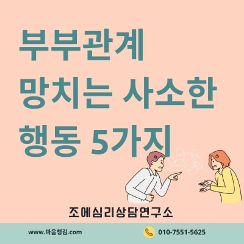
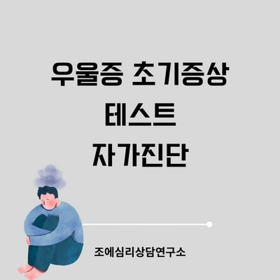
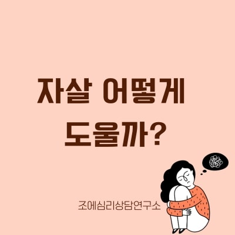
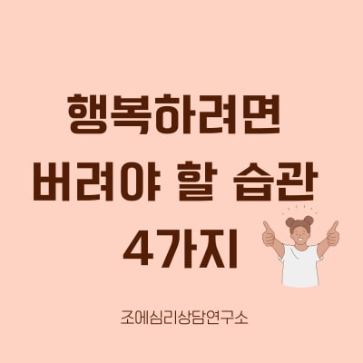

힐링가이드
마음의 치유와 성장을 위한 다양한 정보와 실용적인 팁들을 제공합니다. 일상에서 실천할 수 있는 심리 건강 관리법을 확인하세요.

부부관계 개선을 망치는 사소한 행동 5가지

우울증 초기증상 테스트 자가진단
커플 싸움, 어떻게 끌렸을까?

자살 예방 징후, 어떻게 도울까?

번아웃 테스트와 극복 방법

행복하려면 버려야 할 생각 습관 4가지

역주행 성공한 사람들의 4가지 특징

일론머스크 vs 주커버그 성격 분석
킹더랜드로 보는 사랑과 도파민
도파민 중독에서 벗어나는 법 3가지
프로파간다와 바넘효과, 인지 편향
심리상담사의 호캉스와 마음챙김
나쁜 엄마 심리분석과 좋은 엄마란?
자존감 높이는 방법과 낮은 사람의 특징
더 글로리 등장인물 심리분석
밥 로스의 긍정 마인드와 마음챙김